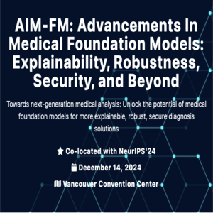

Focused / Interested Research Areas -- Exploring interactions among features,
Scene Understanding + 3D Scene Reconstruction, Deep Reinforcement Learning
Hobbies -- Running Half Marathons, playing video games (Valorant, Destiny), playing the guitar and piano
Experiences
Northwestern University -- Dept of Computer Science
Research Assistant -- Advised by Prof. Zach Wood-Doughty
Building advanced Machine Learning models (e.g. Deep Learning, Large Language Models) to
impute unknown confounders for causal relationships
Applying causal methodologies (e.g. measurement error + noisy proxy predictions) to examine
causality between TTE, mortality, and smoking proxy
Check out the Publications section to view current paper / works!
Intuit Inc
Software Engineer Intern
Proposed and implemented persistence enhancements to current API functionalities (Java)
to more efficiently handle large-scaled (200K) transactions daily
Designed and optimized resiliency in the backend (Java) to catch + retry unpublished
transactions (Kafka), improving platform robustness for every-day use
Ensured automation and 100% adherence to schedule by deploying persistence and
resiliency onto schedulers using AWS and Kubernetes
Understanding the codebase of financial products, contributing new features, and
fixing other contributors' bugs
Northwestern University: Dept of Computer Science
Teaching Assistant
Courses: Machine Learning, Deep Learning, Data Engineer Studio
Selected based on strong knowledge required for the courses + prior course performances
Provided coursework assistance and mentorship for final projects through online/offline office hours
Ford Motor Company
Software Engineer Intern
Machine Learning features pipeline: developed an end-to-end pipeline that collects 1000+ KPI data generated
from infotainment system in vehicles and visualize them through a monitoring dashboard
Collected requirements from senior engineers, proposed the design of the system, and received approval
from the tech leadership
Education
Northwestern University
Dec 2024
Bachelor's in Computer Science -- GPA: 3.972 / 4.00
Publications

Controlling For Unobserved Confounding with Large Language Model Classification of Patient Smoking Status